특수용접기능사 (2008-03-30 기출문제)
1과목: 용접일반
1. 가스 절단에서 예열 불꽃이 약할 때 나타나는 현상은?
- 드래그가 증가한다.
- 절단면이 거칠어진다.
- 변두리가 용융되어 둥글게 된다.
- 슬래그 중의 철 성분의 박리가 어려워진다.
(정답률: 56%)

2. 산소-아세틸렌 가스용접의 단점이 아닌 것은?
- 열효율이 낮다.
- 폭발할 위험이 있다.
- 가열시간이 오래 걸린다.
- 가스불꽃의 조절이 어렵다.
(정답률: 48%)
3. 용접봉 홀더가 KS 규격으로 200호 일 때 용접기의 정격 전류로 맞는 것은?
- 100A
- 200A
- 400A
- 800A
(정답률: 90%)
4. 직류 아크용접에서 정극성의 특징 설명으로 맞는 것은?
- 비드 폭이 넓다.
- 주로 박판용접에 쓰인다.
- 모재의 용입이 깊다.
- 용접봉의 녹음이 빠르다.
(정답률: 85%)
5. 고장력강용 피복아크 용접봉의 특징 설명으로 틀린 것은?
- 인장강도가 50kgf/㎟ 이상이다.
- 재료 취급 및 가공이 어렵다.
- 동일한 강도에서 판 두께를 얇게 할 수 있다.
- 소요 강재의 중량을 경감시킨다.
(정답률: 52%)
6. 아크 전류가 일정할 때 아크 전압이 높아지면 용접봉의 용융속도가 늦어지고 아크 전압이 낮아지면 용융속도가 빨라지는 특성을 무엇이라 하는가?
- 부저항 특성
- 절연회복 특성
- 전압회복 특성
- 아크 길이 자기제어 특성
(정답률: 71%)
7. TIG 절단에 관한 설명 중 틀린 것은?
- 알루미늄, 마그네슘, 구리와 구리합금, 스테인리스강 등 비철금속의 절단에 이용된다.
- 절단면이 매끈하고 열효율이 좋으며 능률이 대단히 높다.
- 전원은 직류 역극성을 사용한다.
- 아크 냉각용 가스에는 아르곤과 수소의 혼합가스를 사용한다.
(정답률: 56%)
8. 가스 용접에서 전진법과 후진법의 특성을 설명한 것으로 틀린 것은?
- 열 이용률이 좋다.
- 용접속도가 빠르다.
- 용접 변형이 작다.
- 산화정도가 심하다.
(정답률: 79%)
9. 피복 아크 용접에서 용접봉의 용융속도와 관련이 가장 큰 것은?
- 아크 전압
- 용접봉 지름
- 용접기의 종류
- 용접봉 쪽 전압강하
(정답률: 64%)
10. 가스 용접봉 선택의 조건의 들지 않는 것은?
- 모재와 같은 재질일 것.
- 불순물이 포함되어 있지 않을 것.
- 용융 온도가 모재보다 낮을 것.
- 기계적 성질에 나쁜 영향을 주지 않을 것.
(정답률: 75%)
11. 다음 중 기계적 접합법의 종류가 아닌 것은?
- 볼트이음
- 리벳이음
- 코터이음
- 스터드 용접
(정답률: 83%)
12. 산소 용기의 취급상 주의할 점이 아닌 것은?
- 운반 중에 충격을 주지 말 것.
- 그늘진 곳을 피하여 직사광선이 드는 곳에 둘 것
- 산소 누설시험에는 비눗물을 사용할 것.
- 밸브의 개폐는 천천히 할 것.
(정답률: 92%)
13. 교류 아크 용접기에 비해 직류 아크 용접기에 관한 설명으로 올바른 것은?
- 구조가 간단하다.
- 아크 안전성이 떨어진다.
- 감전의 위험이 많다.
- 극성의 변화가 가능하다.
(정답률: 47%)
14. 아크 용접에서 피복제의 역할로서 옳지 않은 것은?
- 용착금속의 급냉 방지
- 용착금속의 탈산정련작용.
- 전기 절연작용
- 스패터의 다량 생성 작용
(정답률: 82%)
15. 산소는 대기 중의 공기 속에 약 몇 % 함유되어 있는가?
- 11%
- 21%
- 31%
- 41%
(정답률: 64%)
16. 다음 중 산소 프로판 가스 용접시 산소:프로판 가스의 혼합비는?
- 1:1
- 2:1
- 2.5:1
- 4.5:1
(정답률: 64%)
17. 가스 가우징에 대한 설명 중 틀린 것은?
- 용접부의 결함, 가접의 제거, 홈가공 등에 사용된다.
- 스카핑에 비하여 나비가 큰 홈을 가공한다.
- 팁은 슬로우 다이버전트로 설계되어 있다.
- 가우징 진행 중 팁은 모재에 닿지 않도록 한다.
(정답률: 58%)
18. 다음 중 주조, 단조, 압연 및 용접 후에 생긴 잔류 응력을 제거할 목적으로 보통 500~600℃ 정도에서 가열하여 서냉시키는 열처리는?
- 담금질
- 질화 불림
- 저온뜨임
- 응력제거풀림
(정답률: 55%)
19. 알루미늄의 전기전도율은 구리의 약 몇 % 정도인가?
- 5
- 65
- 90
- 135
(정답률: 62%)
20. KS규격의 SM45C에 대한 설명으로 옳은 것은?
- 인장강도가 45㎏f/㎟의 용접 구조용 탄소강재
- Cr을 42~48% 함유한 특수 강재
- 인장강도 40~45㎏f/㎟의 압연 강재
- 화학성분에서 탄소 함유량이 0.42~0.48%인 기계 구조물 탄소 강재
(정답률: 43%)
21. 다음 중 스테인리스강의 내식성 향상을 위해 첨가하는 가장 효과적인 원소는?
- Zn
- Sn
- Cr
- Mg
(정답률: 52%)
22. 다음 중 주강에 대한 설명으로 틀린 것은?
- 주철로써는 강도가 부족할 경우에 사용된다.
- 용접에 의한 보수가 용이하다.
- 단조품이나 압연품에 비하여 방향성이 없다.
- 주철에 비하여 용융점이 낮다.
(정답률: 57%)
23. 다음 중 화학적인 표면 경화법이 아닌 것은?
- 고체 침탄법
- 가스 침탄법
- 고주파 경화법
- 질화법
(정답률: 55%)
24. 다음 중 철(Fe)의 재결정온도는?
- 180~200℃
- 200~250℃
- 350~450℃
- 800~900℃
(정답률: 55%)
25. 아연을 약 40% 첨가한 황동으로 고온가공 하여 상온에서 완성하며, 열교환기, 열간 단조품, 탄피 등에 사용되고 탈 아연 부식을 일으키기 쉬운 것은?
- 알브락
- 니켈황동
- 문츠메탈
- 애드미럴티황동
(정답률: 64%)
26. 주로 전자기 재료로 사용되는 Ni-Fe 합금에 사용하지 않는 것은?
- 슈퍼인바
- 엘린바
- 스텔라이트
- 퍼멀로이
(정답률: 39%)
27. 주철을 고온으로 가열했다가 냉각하는 과정을 반복하면 부피가 팽창하여 변형이나 균열이 발생하는데 이러한 현상을 무엇이라 하는가?
- 청열취성
- 적열취성
- 고온시효
- 성장
(정답률: 45%)
28. 중탄소강(0.3~0.5%C)의 용접시 탄소함유량의 증가에 따라 저온균열이 발생할 우려가 있으므로 적당한 예열이 필요하다. 다음 중 가장 적당한 예열온도는?
- 100~200℃
- 400~450℃
- 500~600℃
- 800℃ 이상
(정답률: 28%)
29. 탄산가스 아크 용접의 종류에 해당되지 않는 것은?
- 아코스 아크법
- 테르밋 용접법
- 유니언 아크법
- 퓨즈 아크법
(정답률: 66%)
30. 용착 금속이나 모재의 파면에서 결정의 파면이 은백색으로 빛나는 파면을 무엇이라 하는가?
- 연성파면
- 취성파면
- 인성파면
- 결정파면
(정답률: 42%)
31. 다음 용접변형 교정법 중 외력만으로써 소성변형을 일어나게 하는 것은?
- 박판에 대한 점 수축법
- 형재에 대한 직선 수축법
- 피닝법
- 가열 후 해머링하는 법
(정답률: 55%)
32. MIG용접의 기본적인 특징이 아닌 것은?
- 피복 아크 용접에 비해 용착효율이 높다.
- CO2용접에 비해 스패터 발생이 적다.
- 아크가 안정되므로 박판 용접에 적합하다.
- TIG용접에 비해 전류밀도가 높다.
(정답률: 59%)
33. 서브머지드 아크 용접헤드에 속하지 않는 것은?
- 용제 호퍼
- 와이어 송급장치
- 불활성가스 공급장치
- 제어장치 콘택트 팁
(정답률: 41%)
34. 이산화탄소 아크용접시 후판의 아크전압 산출 공식은?
- Vо = 0.04×I＋20±2.0
- Vо = 0.⑤×I＋30±3.0
- Vо = 0.06×I＋40±4.0
- Vо = 0.07×I＋50±5.0
(정답률: 47%)
35. 다음 중 전기용접을 할 때 전격의 위험이 가장 높은 경우는?
- 용접 중 접지가 불량할 때
- 용접부가 두꺼울 때
- 용접봉이 굵고 전류가 높을 때
- 용접부가 불규칙할 때
(정답률: 71%)
2과목: 용접재료
36. 불활성 가스(inert gas)에 속하지 않는 것은?
- Ar(아르곤)
- CO(일산화탄소)
- Ne(네온)
- He(헬륨)
(정답률: 62%)
37. 전기저항 용접법의 특징설명으로 틀린 것은?
- 작업속도가 빠르고 대량생산에 적합하다.
- 산화 및 변질부분이 적다.
- 열손실이 많고, 용접부에 집중열을 가할 수 없다.
- 용접봉, 용재 등이 불필요하다.
(정답률: 63%)
38. 납땜에서 경납용 용제가 아닌 것은?
- 붕사
- 붕산
- 염산
- 알카리
(정답률: 58%)
39. 용접 전의 작업준비 사항이 아닌 것은?
- 용접 재료
- 용접사
- 용접봉의 선택
- 후열과 풀림
(정답률: 86%)
40. 용접부의 연성과 안전성을 판단하기 위하여 사용되는 시험 방법은?
- 굴곡시험
- 인장시험
- 충격시험
- 경도시험
(정답률: 43%)
41. 다음 용접 이음부 중에서 냉각 속도가 가장 빠른 이음은?
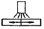
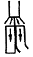
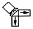
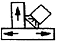
(정답률: 63%)
42. 용접부의 내부 결함으로서 슬래그 섞임을 방지하는 것은?
- 전층의 슬래그는 제거하지 않고 용접한다.
- 슬래그가 앞지르지 않도록 운봉속도를 유지 한다.
- 용접전류를 낮게 한다.
- 루트 간격을 최대한 좁게 한다.
(정답률: 73%)
43. TIG용접에서 가스노즐의 크기는 가스분출 구멍의 크기로 정해지며 보통 몇 ㎜의 크기가 주로 사용되는가?
- 1~3
- 4~13
- 14~20
- 21~2７
(정답률: 56%)
44. 전기용접기의 취급관리에 대한 안전사항으로서 잘못된 것은?
- 용접기는 항상 건조한 곳에 설치 후 작업한다.
- 용접전류는 용접봉 심선의 굵기에 따라 적정 전류를 정한다.
- 용접 전류 조정은 용접을 진행하면서 조정한다.
- 용접기는 통풍이 잘되고 그늘진 곳에 설치를 하고 습기가 없어야 한다.
(정답률: 78%)
45. 용접을 크게 분류할 때 압접에 해당 되는 않는 것은?
- 저항 용접
- 초음파용접
- 마찰용접
- 전자빔용접
(정답률: 48%)
46. 플러그 용접에서 전단강도는 구멍의 면적당 전용착금속 인장강도의 몇 % 정도로 하는가?
- 20~30
- 40~50
- 60~70
- 80~90
(정답률: 42%)
47. 열적 핀치효과와 자기적 핀치 효과를 이용하는 용접은?
- 초음파 용접
- 고주파 용접
- 레이저 용접
- 플라즈마 아크용접
(정답률: 62%)
48. 안전모의 사용시 머리 상부와 안전모 내부의 상단과의 간격은 얼마로 유지하면 좋은가?
- 10 ㎜ 이상
- 15 ㎜ 이상
- 20 ㎜ 이상
- 25 ㎜ 이상
(정답률: 38%)
49. 용접 결함에서 치수상 결함에 속하는 것은?
- 기공
- 언더컷
- 변형
- 균열
(정답률: 79%)
50. 가스 용접에서 붕사 75%에 염화나트륨 25%가 혼합된 용제는 어떤 금속용접에 적합한가?
- 연강
- 주철
- 알루미늄
- 구리합금
(정답률: 33%)
3과목: 기계제도
51. 단면임을 나타내기 위하여 단면부분의 주된 중심선에 대해 45°(도) 경사지게 나타내는 선들을 의미하는 것은?
- 호핑
- 해칭
- 코킹
- 스머징
(정답률: 72%)
52. 배관의 간략 도시방법에서 파이프의 영구 결합부(용접 또는 다른 공법에 의한다) 상태를 나타내는 것은?
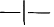
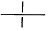
(정답률: 79%)
53. 강판을 다른 그림과 같이 용접할 때의 KS 용접 기호는?
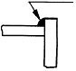
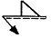
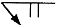
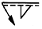
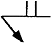
(정답률: 70%)
54. 기계제도에서 호의 길이를 표시하는 치수 기입법은?
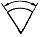
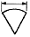
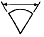
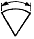
(정답률: 69%)
55. 기계제도에서 선의 굵기가 가는 실선이 아닌 것은?
- 치수선
- 해칭선
- 지시선
- 특수지정선
(정답률: 62%)
56. 보기와 같은 입체도를 화살표 방향을 정면으로 하는 제3각법으로 제도한 정투상도는?
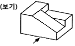
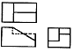
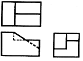
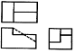
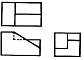
(정답률: 69%)
57. 특수부분의 도형이 작은 까닭으로 그 부분의 상세한 도시나 치수기입을 할 수 없을 때 그 부분을 에워싸고 영문자의 대문자로 표시하고, 그 부분을 확대하여 다른 장소에 그리는 투상도의 명칭은?
- 부분 투상도
- 보조 투상도
- 부분 확대도
- 국부 투상도
(정답률: 53%)
58. 보기의 도면에서 리벳의 개수는?
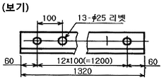
- 12개
- 13개
- 25개
- 100개
(정답률: 70%)
59. 보기 입체도의 화살표 방향이 정면일 경우 좌측면도로 가장 적합한 것은?
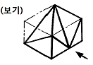
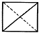
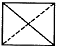
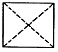
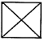
(정답률: 56%)
60. 보기와 같은 원통을 경사지게 절단한 제품을 제작할 때, 다음 중 어떤 전개법이 가장 적합한가?
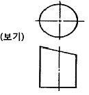
- 혼합형법
- 평행선법
- 삼각형법
- 방사선법
(정답률: 74%)